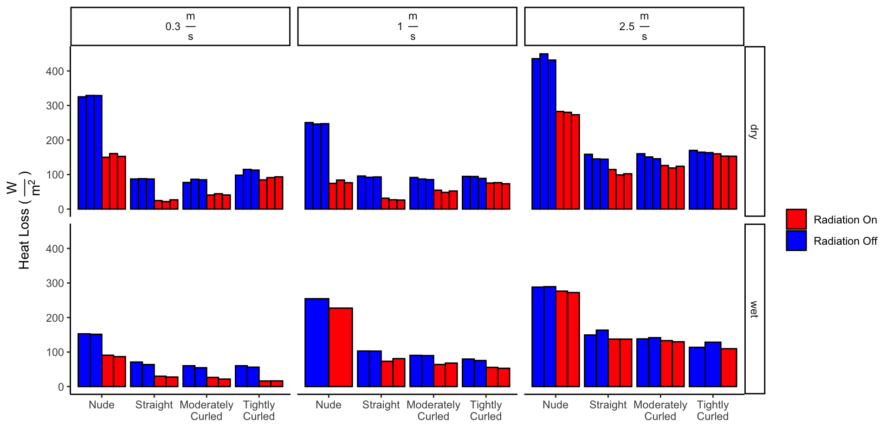
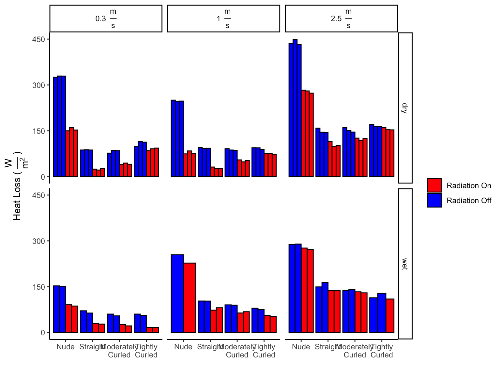
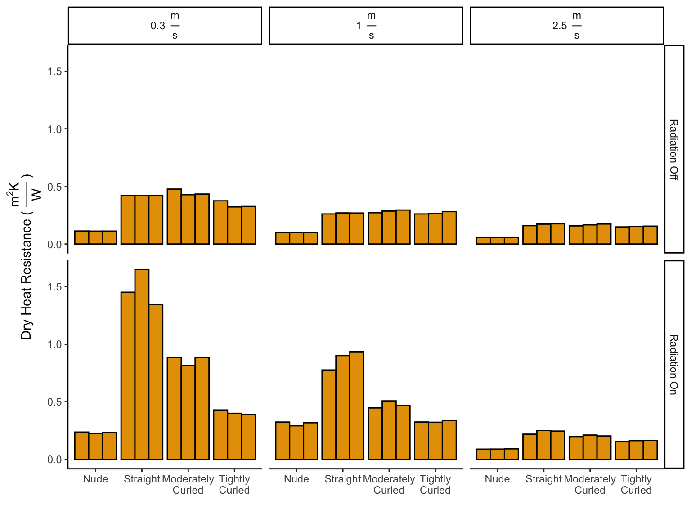
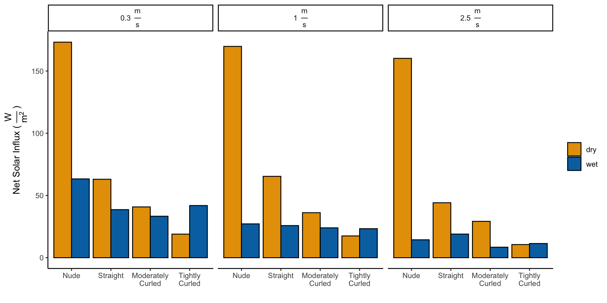
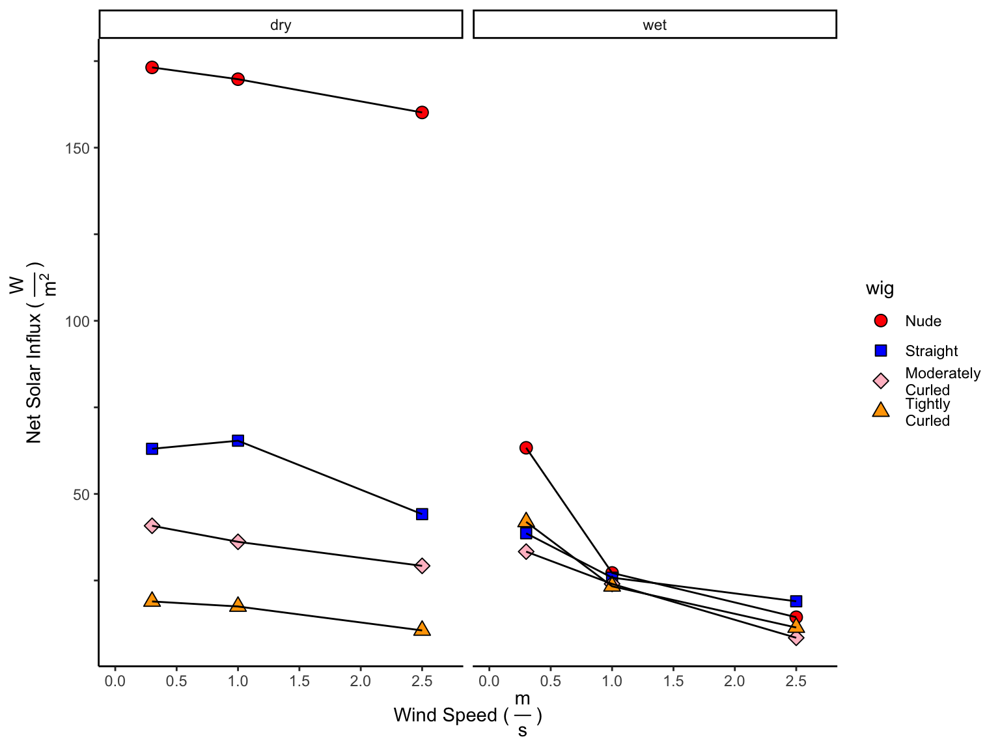
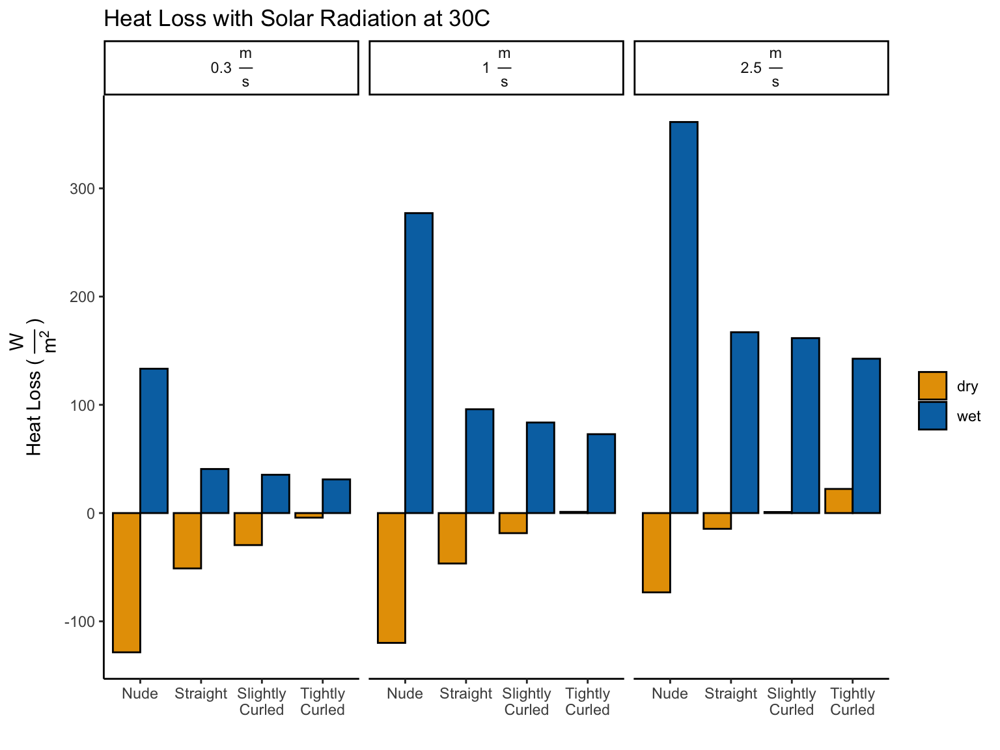
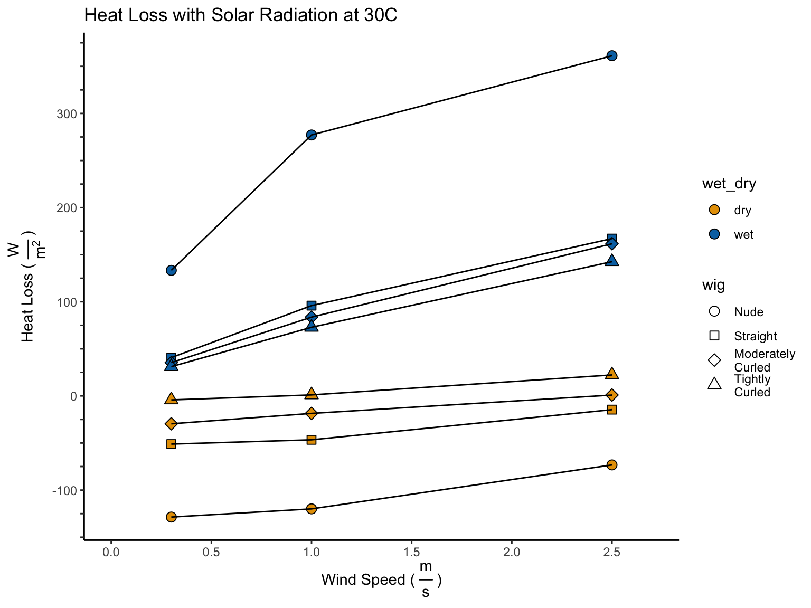
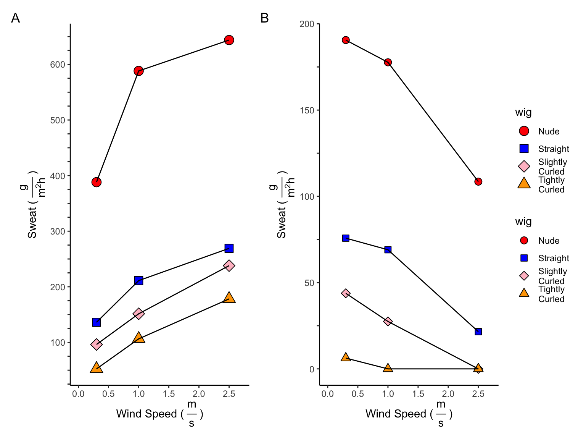

Analysis
Tina Lasisi
October 14, 2022
Last updated: 2022-10-14
Checks: 7 0
Knit directory: HairManikin2022/
This reproducible R Markdown analysis was created with workflowr (version 1.7.0). The Checks tab describes the reproducibility checks that were applied when the results were created. The Past versions tab lists the development history.
Great! Since the R Markdown file has been committed to the Git repository, you know the exact version of the code that produced these results.
Great job! The global environment was empty. Objects defined in the global environment can affect the analysis in your R Markdown file in unknown ways. For reproduciblity it’s best to always run the code in an empty environment.
The command set.seed(20211024) was run prior to running
the code in the R Markdown file. Setting a seed ensures that any results
that rely on randomness, e.g. subsampling or permutations, are
reproducible.
Great job! Recording the operating system, R version, and package versions is critical for reproducibility.
Nice! There were no cached chunks for this analysis, so you can be confident that you successfully produced the results during this run.
Great job! Using relative paths to the files within your workflowr project makes it easier to run your code on other machines.
Great! You are using Git for version control. Tracking code development and connecting the code version to the results is critical for reproducibility.
The results in this page were generated with repository version 2297636. See the Past versions tab to see a history of the changes made to the R Markdown and HTML files.
Note that you need to be careful to ensure that all relevant files for
the analysis have been committed to Git prior to generating the results
(you can use wflow_publish or
wflow_git_commit). workflowr only checks the R Markdown
file, but you know if there are other scripts or data files that it
depends on. Below is the status of the Git repository when the results
were generated:
Ignored files:
Ignored: .DS_Store
Ignored: .Rhistory
Ignored: .Rproj.user/
Untracked files:
Untracked: output/v2_manuscriplt_plt_influx.png
Note that any generated files, e.g. HTML, png, CSS, etc., are not included in this status report because it is ok for generated content to have uncommitted changes.
These are the previous versions of the repository in which changes were
made to the R Markdown (analysis/analysis.Rmd) and HTML
(docs/analysis.html) files. If you’ve configured a remote
Git repository (see ?wflow_git_remote), click on the
hyperlinks in the table below to view the files as they were in that
past version.
| File | Version | Author | Date | Message |
|---|---|---|---|---|
| Rmd | 2297636 | Tina Lasisi | 2022-10-14 | wflow_publish("analysis/analysis.Rmd") |
| html | 43ec126 | Tina Lasisi | 2022-10-13 | Build site. |
| Rmd | b4e6cdd | Tina Lasisi | 2022-10-13 | wflow_publish("analysis/analysis.Rmd") |
| Rmd | 224e810 | Tina Lasisi | 2022-08-12 | Website updated |
| html | 224e810 | Tina Lasisi | 2022-08-12 | Website updated |
| Rmd | c817e49 | Tina Lasisi | 2022-08-12 | Finalized figures |
| Rmd | a776080 | Tina Lasisi | 2022-08-11 | Updated manuscript figures |
| Rmd | f4e9255 | Tina Lasisi | 2022-08-11 | Updated figures and saved manuscript fig |
| Rmd | 637ecd5 | Tina Lasisi | 2022-08-11 | Update analysis.Rmd |
| Rmd | 0efd834 | Tina Lasisi | 2022-08-11 | Update analysis.Rmd |
| Rmd | 39c5f29 | Ben Zydney | 2022-08-11 | Fixed data input. |
| html | 39c5f29 | Ben Zydney | 2022-08-11 | Fixed data input. |
| Rmd | 60ac80e | Ben Zydney | 2022-08-11 | Merge branch ‘main’ of https://github.com/tinalasisi/HairManikin2022 |
| Rmd | 3a1d68c | Ben Zydney | 2022-08-11 | Updated analysis folder. |
| html | 3a1d68c | Ben Zydney | 2022-08-11 | Updated analysis folder. |
| Rmd | 78fb2fe | Tina Lasisi | 2022-08-11 | Updated plots + libraries |
| html | 6e70659 | Ben Zydney | 2022-08-06 | Updated Website |
| Rmd | 9db041e | Ben Zydney | 2022-08-06 | Reworked hair analysis calculations. |
| Rmd | dd0e722 | Tina Lasisi | 2022-03-13 | edited df creation |
| html | dd0e722 | Tina Lasisi | 2022-03-13 | edited df creation |
| Rmd | 210cee3 | Tina Lasisi | 2022-03-10 | updated figure size |
| html | 210cee3 | Tina Lasisi | 2022-03-10 | updated figure size |
| Rmd | bf62a07 | Tina Lasisi | 2022-03-10 | Updating analyses + figures |
| html | bf62a07 | Tina Lasisi | 2022-03-10 | Updating analyses + figures |
| html | 1a1f7bc | Tina Lasisi | 2022-03-07 | Build site. |
| Rmd | 7478e4c | Tina Lasisi | 2022-03-07 | updating analyses with models |
| html | c0ce5d2 | Tina Lasisi | 2022-03-06 | Build site. |
| Rmd | 4041aec | Tina Lasisi | 2022-03-06 | wflow_publish(files = "analysis/*", all = TRUE, republish = TRUE, |
| html | 4041aec | Tina Lasisi | 2022-03-06 | wflow_publish(files = "analysis/*", all = TRUE, republish = TRUE, |
| Rmd | a796ceb | Ginawsy | 2022-02-21 | updated sum_manikin_df variable |
| Rmd | 520dcfc | GitHub | 2022-02-16 | Update analysis.Rmd |
| Rmd | 9c5b0d8 | Tina Lasisi | 2022-02-15 | Update analysis + figures |
| html | 9c5b0d8 | Tina Lasisi | 2022-02-15 | Update analysis + figures |
| Rmd | e9fa430 | GitHub | 2022-01-30 | Update analysis.Rmd |
| html | bb36720 | Tina Lasisi | 2022-01-18 | Build site. |
| Rmd | 05389ae | Tina Lasisi | 2022-01-18 | Added figures + analysis placeholders |
| html | 05389ae | Tina Lasisi | 2022-01-18 | Added figures + analysis placeholders |
| Rmd | bb99f1d | Tina Lasisi | 2022-01-08 | Update analysis.rmd + add data |
| html | bb99f1d | Tina Lasisi | 2022-01-08 | Update analysis.rmd + add data |
| Rmd | 0a50ef7 | Tina Lasisi | 2022-01-07 | Adding main analysis file |
1 Preparing Data
First, we import the data and label the variables.
# Preview data
head(df_wetdry)| wind | wig | wet_dry | heat_loss | skin_temp | resistance | clo | amb_temp | amb_rh | radiation | trial |
|---|---|---|---|---|---|---|---|---|---|---|
| 0.3 | Nude | wet | 90.9 | 34 | 4.36e-08 | 2.81e-07 | 34 | 45.8 | on | 1 |
| 0.3 | Nude | wet | 86.7 | 34 | -0.00121 | -0.00782 | 34.1 | 45.8 | on | 2 |
| 1 | Nude | wet | 227 | 34 | 0.000119 | 0.000767 | 34 | 46.3 | on | 1 |
| 2.5 | Nude | wet | 276 | 34 | -0.00082 | -0.00529 | 34.3 | 48.2 | on | 1 |
| 2.5 | Nude | wet | 272 | 34 | -0.000804 | -0.00519 | 34.2 | 48.1 | on | 2 |
| 0.3 | Straight | wet | 30 | 34 | -0.00422 | -0.0272 | 34.1 | 45.4 | on | 1 |

1.1 Removing Outlier
It was noticed that the 2nd trial conducted with wet, tightly curled hair, 2.5 m/s wind speed, and radiation on, had more heat loss than any of the trials with radiation off. With the understanding that radiation should always decrease heat loss, we elected to remove that data point.
# Remove specific entry
df_wetdry <- df_wetdry %>% filter(!(wig == "Tightly\nCurled" & wind == 2.5 & radiation == "on" & wet_dry == "wet" & trial == "1"))
2 Regression models
2.0.1 Radiation off
Here, we model the effect of the wig variable on the
off (heat loss without radiation) variable while correcting
for wind.
Without radiation, having hair will reduce the heat loss.
Call:
lm(formula = off ~ wind + wig, data = df_dry_off)
Residuals:
Min 1Q Median 3Q Max
-8.0303 -3.9809 0.1861 2.6542 14.6310
Coefficients:
Estimate Std. Error t value Pr(>|t|)
(Intercept) 46.156 2.250 20.52 < 2e-16 ***
wind 11.270 1.009 11.17 2.13e-12 ***
wigStraight -40.341 2.618 -15.41 4.46e-16 ***
wigModerately\nCurled -40.747 2.618 -15.56 3.38e-16 ***
wigTightly\nCurled -38.362 2.618 -14.65 1.76e-15 ***
---
Signif. codes: 0 '***' 0.001 '**' 0.01 '*' 0.05 '.' 0.1 ' ' 1
Residual standard error: 5.555 on 31 degrees of freedom
Multiple R-squared: 0.9384, Adjusted R-squared: 0.9305
F-statistic: 118.1 on 4 and 31 DF, p-value: < 2.2e-162.0.2 Radiation on
With radiation, there is a net increase in heat (i.e. heat gain) without any hair. Additonally, we observe that heat gain decreases with increasingly curled hair.
Call:
lm(formula = on ~ wind + wig, data = df_dry_on)
Residuals:
Min 1Q Median 3Q Max
-13.6776 -4.8542 -0.0306 3.3559 19.1058
Coefficients:
Estimate Std. Error t value Pr(>|t|)
(Intercept) -129.327 2.835 -45.61 < 2e-16 ***
wind 17.406 1.271 13.69 1.1e-14 ***
wigStraight 69.844 3.300 21.16 < 2e-16 ***
wigModerately\nCurled 91.558 3.300 27.74 < 2e-16 ***
wigTightly\nCurled 113.668 3.300 34.44 < 2e-16 ***
---
Signif. codes: 0 '***' 0.001 '**' 0.01 '*' 0.05 '.' 0.1 ' ' 1
Residual standard error: 7.001 on 31 degrees of freedom
Multiple R-squared: 0.98, Adjusted R-squared: 0.9775
F-statistic: 380.4 on 4 and 31 DF, p-value: < 2.2e-162.0.3 Solar influx
Here, we model the effect of the wig variable on
influx while correcting for wind.
In the dry heat loss experiments, we see that all hair (regardless of curliness) decreases the solar influx. Additionally, the curlier the hair, the lower the solar influx.
Call:
lm(formula = influx ~ wind + wig, data = df_dry)
Residuals:
Min 1Q Median 3Q Max
-8.079 -3.816 1.087 2.763 9.105
Coefficients:
Estimate Std. Error t value Pr(>|t|)
(Intercept) 175.4829 2.0133 87.161 < 2e-16 ***
wind -6.1369 0.9028 -6.798 1.3e-07 ***
wigStraight -110.1848 2.3434 -47.019 < 2e-16 ***
wigModerately\nCurled -132.3051 2.3434 -56.459 < 2e-16 ***
wigTightly\nCurled -152.0302 2.3434 -64.876 < 2e-16 ***
---
Signif. codes: 0 '***' 0.001 '**' 0.01 '*' 0.05 '.' 0.1 ' ' 1
Residual standard error: 4.971 on 31 degrees of freedom
Multiple R-squared: 0.9939, Adjusted R-squared: 0.9932
F-statistic: 1272 on 4 and 31 DF, p-value: < 2.2e-162.0.4 Summary of dry heat loss regression models
2.0.4.1 All separate
| Radiation Off | Radiation On | Solar Influx | |
|---|---|---|---|
| (Intercept) | 46.16 *** | -129.33 *** | 175.48 *** |
| [41.57, 50.74] | [-135.11, -123.54] | [171.38, 179.59] | |
| wind | 11.27 *** | 17.41 *** | -6.14 *** |
| [9.21, 13.33] | [14.81, 20.00] | [-7.98, -4.30] | |
| wigStraight | -40.34 *** | 69.84 *** | -110.18 *** |
| [-45.68, -35.00] | [63.11, 76.58] | [-114.96, -105.41] | |
| wigModerately Curled | -40.75 *** | 91.56 *** | -132.31 *** |
| [-46.09, -35.41] | [84.83, 98.29] | [-137.08, -127.53] | |
| wigTightly Curled | -38.36 *** | 113.67 *** | -152.03 *** |
| [-43.70, -33.02] | [106.94, 120.40] | [-156.81, -147.25] | |
| N | 36 | 36 | 36 |
| R2 | 0.94 | 0.98 | 0.99 |
| *** p < 0.001; ** p < 0.01; * p < 0.05. | |||

Regression coefficients across regression models.
2.1 Evaporative resistance (wet experiments)
Here, we repeat the same modelling process for the evaporative resistance data from the wet experiments.
2.1.1 Radiation off
Here, we model the effect of the wig variable on the
off (heat loss without radiation) variable while correcting
for wind.
Without solar radiation, all hair (regardless of texture) decreases evaporative resistance.
Call:
lm(formula = off ~ wind + wig, data = df_wet_off)
Residuals:
Min 1Q Median 3Q Max
-32.382 -6.006 2.673 5.870 40.839
Coefficients:
Estimate Std. Error t value Pr(>|t|)
(Intercept) 171.043 9.132 18.73 8.71e-13 ***
wind 42.585 3.929 10.84 4.69e-09 ***
wigStraight -116.024 10.179 -11.40 2.20e-09 ***
wigModerately\nCurled -129.170 10.179 -12.69 4.26e-10 ***
wigTightly\nCurled -134.409 10.695 -12.57 4.95e-10 ***
---
Signif. codes: 0 '***' 0.001 '**' 0.01 '*' 0.05 '.' 0.1 ' ' 1
Residual standard error: 16.81 on 17 degrees of freedom
Multiple R-squared: 0.9551, Adjusted R-squared: 0.9446
F-statistic: 90.46 on 4 and 17 DF, p-value: 3.177e-112.1.2 Radiation on
With radiation, hair decreases evaporative resistance.
Call:
lm(formula = on ~ wind + wig, data = df_wet_on)
Residuals:
Min 1Q Median 3Q Max
-47.426 -11.303 4.423 6.822 54.290
Coefficients:
Estimate Std. Error t value Pr(>|t|)
(Intercept) 117.541 12.726 9.236 4.90e-08 ***
wind 55.445 5.475 10.127 1.29e-08 ***
wigStraight -106.632 14.186 -7.517 8.44e-07 ***
wigModerately\nCurled -113.898 14.186 -8.029 3.48e-07 ***
wigTightly\nCurled -123.891 14.905 -8.312 2.16e-07 ***
---
Signif. codes: 0 '***' 0.001 '**' 0.01 '*' 0.05 '.' 0.1 ' ' 1
Residual standard error: 23.42 on 17 degrees of freedom
Multiple R-squared: 0.9255, Adjusted R-squared: 0.908
F-statistic: 52.8 on 4 and 17 DF, p-value: 2.297e-092.1.3 Solar influx
Combining the above data to calculate solar influx, we see that there is not a considerable effect of radiation on evaporative resistance.
Call:
lm(formula = influx ~ wind + wig, data = df_wet)
Residuals:
Min 1Q Median 3Q Max
-13.4512 -4.2205 -0.7951 3.9758 15.0438
Coefficients:
Estimate Std. Error t value Pr(>|t|)
(Intercept) 53.502 4.585 11.669 1.54e-09 ***
wind -12.860 1.973 -6.520 5.24e-06 ***
wigStraight -9.392 5.111 -1.838 0.08368 .
wigModerately\nCurled -15.272 5.111 -2.988 0.00826 **
wigTightly\nCurled -10.518 5.370 -1.959 0.06676 .
---
Signif. codes: 0 '***' 0.001 '**' 0.01 '*' 0.05 '.' 0.1 ' ' 1
Residual standard error: 8.439 on 17 degrees of freedom
Multiple R-squared: 0.7493, Adjusted R-squared: 0.6903
F-statistic: 12.7 on 4 and 17 DF, p-value: 5.753e-052.1.4 Summary of evaporative heat loss regression models
2.1.4.1 All separate
| Radiation Off | Radiation On | Solar Influx | |
|---|---|---|---|
| (Intercept) | 171.04 *** | 117.54 *** | 53.50 *** |
| [151.78, 190.31] | [90.69, 144.39] | [43.83, 63.18] | |
| wind | 42.58 *** | 55.44 *** | -12.86 *** |
| [34.30, 50.87] | [43.89, 67.00] | [-17.02, -8.70] | |
| wigStraight | -116.02 *** | -106.63 *** | -9.39 |
| [-137.50, -94.55] | [-136.56, -76.70] | [-20.17, 1.39] | |
| wigModerately Curled | -129.17 *** | -113.90 *** | -15.27 ** |
| [-150.65, -107.69] | [-143.83, -83.97] | [-26.06, -4.49] | |
| wigTightly Curled | -134.41 *** | -123.89 *** | -10.52 |
| [-156.97, -111.84] | [-155.34, -92.45] | [-21.85, 0.81] | |
| N | 22 | 22 | 22 |
| R2 | 0.96 | 0.93 | 0.75 |
| *** p < 0.001; ** p < 0.01; * p < 0.05. | |||

Regression coefficients across regression models.
3 Calculating Thermal Resistance
\[I_t = \frac{T_{Skin} - T_{Air}}{H_{Dry}}\]
df_wetdry['dry_heat_resistance'] <- (df_wetdry['skin_temp'] - df_wetdry['amb_temp']) / df_wetdry['heat_loss']
# For the dry data, leave this blank
df_wetdry <- df_wetdry %>% mutate(dry_heat_resistance = ifelse(wet_dry == 'wet', NaN, dry_heat_resistance))
4 Calculating Net Solar Influx
\[I_{Dry} = H_{Dry} - H_{Dry}^{Solar}\] \[I_{Evap} = H_{Evap} - H_{Evap}^{Solar}\]
# Average all trials with the same characteristics
df_averaged_trials <- df_wetdry %>%
group_by(wig, wind, radiation, wet_dry) %>%
drop_na(heat_loss) %>%
summarise(heat_loss = mean(heat_loss))
# Pivot the dataframe to incldue radiation on and off as part of same event
df_radiation_split <- df_averaged_trials %>%
pivot_wider(names_from = c(radiation), values_from = c(heat_loss)) %>%
rename(heat_loss_off = off) %>%
rename(heat_loss_on = on)
# Calculate the net influx
df_net_influx_plots <- df_radiation_split %>%
group_by(wig, wind) %>%
summarise(wet_dry = wet_dry,
net_influx = heat_loss_off - heat_loss_on)
df_net_influx <- df_net_influx_plots %>% spread(wet_dry, net_influx)

5 Adjusting Heat Losses to 30 Degrees Celsius
5.1 Dry Heat Loss
\[H_{Dry}^{30^\circ C} = \frac{35 -30}{I_t}\]
# Their calculation
df_wetdry['heat_30'] = (35 - 30) / df_wetdry['dry_heat_resistance']
# What I would expect
#df_wetdry['heat_30'] = (df_wetdry['skin_temp'] - 30) / df_wetdry['dry_heat_resistance']
# Recreate the radiation split dataframe to include heat_30
df_averaged_trials <- df_wetdry %>%
group_by(wig, wind, radiation, wet_dry) %>%
drop_na(heat_loss) %>%
summarise(heat_loss = mean(heat_loss),
heat_30 = mean(heat_30))
df_radiation_split <- df_averaged_trials %>%
pivot_wider(names_from = c(radiation), values_from = c(heat_loss, heat_30))5.2 Dry and Wet Heat Losses With Solar Radiation
\[H_{Dry}^{30^{\circ} C,\:Solar} = H_{Dry}^{30^{\circ} C} - I_{Dry}\] \[H_{Wet}^{30^{\circ} C,\:Solar} = H_{Evap + Dry}^{30^{\circ} C} = H_{Evap} + I_{Dry} + H_{Dry}^{30^{\circ} C,\:Solar}\]
dry_heat_30 = df_radiation_split[df_radiation_split$wet_dry == 'dry',]
heat_evap = df_radiation_split[df_radiation_split$wet_dry == 'wet',]
df_adjusted_solar <- data.frame(
dry_heat_loss <- dry_heat_30$heat_30_off - df_net_influx$dry,
wind <- dry_heat_30$wind,
wig <- dry_heat_30$wig
) %>% rename('dry_heat_loss' = 'dry_heat_loss....dry_heat_30.heat_30_off...df_net_influx.dry') %>%
rename('wind' = 'wind....dry_heat_30.wind') %>%
rename('wig' = 'wig....dry_heat_30.wig')
df_adjusted_solar['wet_heat_loss'] <- + heat_evap$heat_loss_on + df_net_influx$dry + df_adjusted_solar$dry_heat_loss
df_adjusted_solar_plots <-df_adjusted_solar %>%
pivot_longer(cols = c('dry_heat_loss', 'wet_heat_loss'), names_to = 'wet_dry', values_to = 'heat_loss')

6 Calculating Evaporative Potential
\[H_{Max}^{30^{\circ} C,\:Solar} = H_{Wet}^{30^{\circ} C,\:Solar} - H_{Dry}^{30^{\circ} C,\:Solar}\]
df_evaporative_potential <- df_adjusted_solar$wet_heat_loss - df_adjusted_solar$dry_heat_loss7 Calculating Sweat Requirements
\[Sweat_{Max} = \frac{H_{Max}^{30^{\circ} C,\:Solar} * 3600}{2430}\]
\[ IF \; H_{Dry}^{30^{\circ} C,\:Solar} < 0, \; Sweat_{Zero} = -\frac{H_{Dry}^{30^{\circ} C,\:Solar} * 3600}{2430} \\ ELSE, \; Sweat_{Zero} = 0\]
# Create a new df with the sweat requirements
df_sweat_requirements <- data.frame(
sweat_max <- df_evaporative_potential * 3600 / 2430,
sweat_zero <- -3600 / 2430 * df_adjusted_solar['dry_heat_loss'],
wig <- df_adjusted_solar$wig,
wind <- df_adjusted_solar$wind
)
#Rename columns
colnames(df_sweat_requirements) <- c('sweat_max', 'sweat_zero', 'wig', 'wind')
#Replace all values less than 0 with 0 per formula
df_sweat_requirements['sweat_zero'][df_sweat_requirements['sweat_zero'] < 0] <- 0
R version 4.2.1 (2022-06-23)
Platform: aarch64-apple-darwin20 (64-bit)
Running under: macOS Monterey 12.6
Matrix products: default
BLAS: /Library/Frameworks/R.framework/Versions/4.2-arm64/Resources/lib/libRblas.0.dylib
LAPACK: /Library/Frameworks/R.framework/Versions/4.2-arm64/Resources/lib/libRlapack.dylib
locale:
[1] en_US.UTF-8/en_US.UTF-8/en_US.UTF-8/C/en_US.UTF-8/en_US.UTF-8
attached base packages:
[1] stats graphics grDevices utils datasets methods base
other attached packages:
[1] jtools_2.2.0 huxtable_5.5.0 broom.mixed_0.2.9.4
[4] patchwork_1.1.1 gridExtra_2.3 fs_1.5.2
[7] knitr_1.39 forcats_0.5.1 stringr_1.4.0
[10] dplyr_1.0.9 purrr_0.3.4 readr_2.1.2
[13] tidyr_1.2.0 tibble_3.1.8 ggplot2_3.3.6
[16] tidyverse_1.3.2 workflowr_1.7.0
loaded via a namespace (and not attached):
[1] nlme_3.1-157 bit64_4.0.5 lubridate_1.8.0
[4] httr_1.4.3 rprojroot_2.0.3 tools_4.2.1
[7] backports_1.4.1 bslib_0.4.0 utf8_1.2.2
[10] R6_2.5.1 DBI_1.1.3 colorspace_2.0-3
[13] withr_2.5.0 tidyselect_1.1.2 processx_3.7.0
[16] bit_4.0.4 compiler_4.2.1 git2r_0.30.1
[19] cli_3.3.0 rvest_1.0.2 xml2_1.3.3
[22] labeling_0.4.2 sass_0.4.2 scales_1.2.0
[25] callr_3.7.1 commonmark_1.8.0 digest_0.6.29
[28] rmarkdown_2.14 pkgconfig_2.0.3 htmltools_0.5.3
[31] parallelly_1.32.1 highr_0.9 dbplyr_2.2.1
[34] fastmap_1.1.0 rlang_1.0.4 readxl_1.4.0
[37] rstudioapi_0.13 farver_2.1.1 jquerylib_0.1.4
[40] generics_0.1.3 jsonlite_1.8.0 vroom_1.5.7
[43] googlesheets4_1.0.0 magrittr_2.0.3 Rcpp_1.0.9
[46] munsell_0.5.0 fansi_1.0.3 lifecycle_1.0.1
[49] furrr_0.3.0 stringi_1.7.8 whisker_0.4
[52] yaml_2.3.5 plyr_1.8.7 ggstance_0.3.5
[55] paletteer_1.4.0 grid_4.2.1 parallel_4.2.1
[58] listenv_0.8.0 promises_1.2.0.1 crayon_1.5.1
[61] lattice_0.20-45 haven_2.5.0 splines_4.2.1
[64] pander_0.6.5 hms_1.1.1 ps_1.7.1
[67] pillar_1.8.0 codetools_0.2-18 reprex_2.0.1
[70] glue_1.6.2 evaluate_0.16 getPass_0.2-2
[73] modelr_0.1.8 vctrs_0.4.1 tzdb_0.3.0
[76] httpuv_1.6.5 cellranger_1.1.0 gtable_0.3.0
[79] rematch2_2.1.2 future_1.27.0 assertthat_0.2.1
[82] cachem_1.0.6 xfun_0.32 broom_1.0.0
[85] later_1.3.0 googledrive_2.0.0 gargle_1.2.0
[88] globals_0.16.0 ellipsis_0.3.2